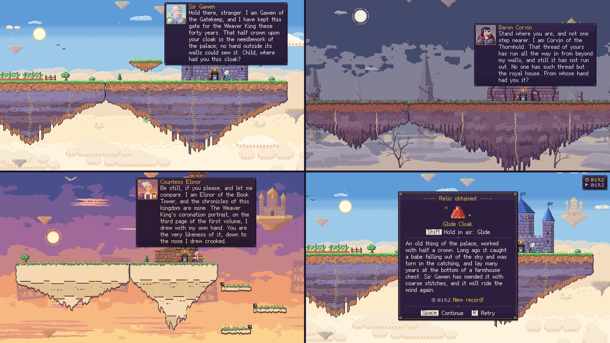
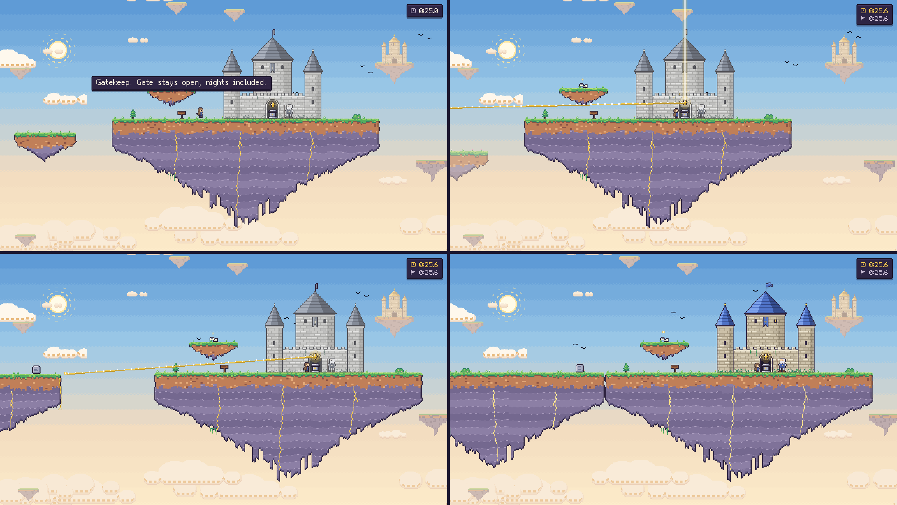
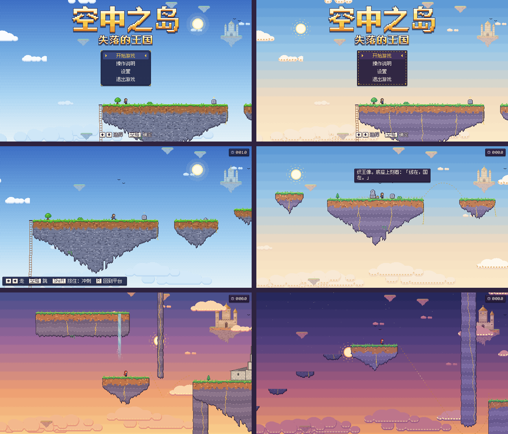
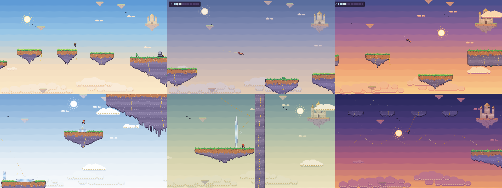

1. One pillar: the pull-up
driftdivepull up
I started from three verbs: drift, dive and pull up. I picked one of them to be the thrill. You dive to build speed, then pull yourself back up into the sky.
The Lost Kingdom
空中之岛 · 失落的王国
A pixel-art platformer set in a lost kingdom that a runaway spell has split into islands in the sky. You run and jump between the islands. Once you find the Glide Cloak, you can dive to build speed and pull yourself back up on your own momentum. Each level ends at a link point, which pulls the island you started on back into place beside the one you reached.
Needs a desktop browser and a keyboard. The first load can take a moment.
You can pick any level from the menu.
I started from three verbs: drift, dive and pull up. I picked one of them to be the thrill. You dive to build speed, then pull yourself back up into the sky.
PROBLEM
My reference was a real wingsuit: no engine, fast, turning a fall into forward motion. The first prototypes missed that in four ways, and each time I sent them back:
RESULT
The final model is a simple glider. Lift and drag grow with the square of speed, and wings stall past a critical angle. An automated test checks that no input glides flatter than holding glide and leaving the pitch alone.
Diving under a hanging wall and pulling up onto the next island (physics test course).
TURNING POINT
After flying the first prototype I changed direction. The core of the game is running and jumping, and gliding is a move you hold in the air.
DECISION
When the game needed more abilities, the glide rule became a test for each one: a relic can change the direction you are moving, but not your speed. If a relic handed out speed, nobody would need to dive.
The code tracks this as an energy ceiling, y − v²/(2g): the highest point you could reach if all your speed became height. Drag only lowers it.
RESULT
The test decided what each relic looks like. The doors give back the speed you came in with, turned to match the exit. The Mirror Shield is a bounce at the speed you hit the wall, because a wall jump would be a push. The rope cannot be pumped, so you swing only as high as the energy you brought. The bracer flips a fall into a rise at the same speed, once per jump.
EXCEPTION
The doors are the one exception to the ceiling: going in low and coming out high is free height. So I have to check how high each pair can carry you, and a low island needs a door back.
WHO DID WHAT
How the work split: the glide rule is mine, and the bracer and the doors were my ideas. Claude proposed the rope and the shield, drafted how all four work and wrote the code. The bracer is still Claude's draft and may change.
Four relics, one rule: the direction changes, the speed does not.
DECISION
Key hints are off by default, and signs and stones only tell the story. The keys appear on the controls page and on the card you get with a relic. Level 1 can be finished with only the arrow keys and jump.
A relic is no use if you never get to try it, so levels 2 to 6 now open with a short practice section for the ability you just earned. A small key plaque floats by the path there, at the start of level 1, and nowhere else.
The route is drawn into the world instead. Golden stitching, a dashed line with a light running along it, marks the path where a new ability first appears. A miss there costs little: you land on something below or go back to the platform you left.
STILL OPEN
Claude Code built the stitching and placed it in the draft levels. Nobody has played with it yet, so I do not know if it reads.
Golden stitching marks the route where a new ability first appears.
PROBLEM
Every session writes a playtest log. In one session on the physics test course, all five falls happened at the same gap: I opened the glide too early.
METHOD
To put a number on it I use an automated level checker. An autopilot tries eight input strategies at more than 30 different timings from each island, heading right, and reports the timing window: how much earlier or later you can press and still make it.
RESULT
That gap had a 0.20 s window. A test layout with the wall shortened and moved, and the landing island lowered, widened it to 0.60 s.
TIMING WINDOW AT THAT GAP
0.20 s → 0.60 s
DECISION
I asked for room on every step: no jump that only works if you hit it exactly. Three scripts, written by Claude Code and Codex, measure that.
RESULT
The targets were a 0.4 s window on every required step and 75% of jitter runs finishing. All six levels reach the jitter target at that setting, between 79% and 100%. In levels 1 to 4 every step reaches 0.4 s. Levels 5 and 6 are built on doors, wall bounces and rope swings, which the checker does not try, so those rest on the jitter test alone. The stairs in level 6 are short at 0.35 s, but you can stop on each step. The optional bracer ledges in levels 4 and 5 are tighter on purpose, about 0.36 to 0.38 s in a separate sweep.
STILL OPEN
These results come from scripts. No real person has played these six levels yet.
JITTER RUNS THAT FINISH, BY LEVEL
79% – 100%
Target: 75%
A runaway spell split the kingdom into islands. The hero is a new adventurer who does not know he is the old king's son. Each level ends at a link point, and touching it pulls the island you came from back into place. Finishing a level gives you a relic.
Relic text stays short, the way Slay the Spire does it. The Antigravity Bracer reads: "Engraved inside: Whoever strikes first loses. Corvin says it isn't his."
CHAPTER ONE
Chapter one has three castles. Gatekeep's gate stays open. Thornhold has walled itself in behind rows of stakes. The Archive keeps adding crooked floors. Until you link them, the castle and its lord are drained of colour. You start with an old golden spool in your hand, and nobody says what it means.
CHAPTER TWO
Chapter two adds three more lords. Lady Viola's Mirrorhold is all mirrors. The Empty Keep breaks the pattern: nobody is home, and Sir Roland's notes count the islands he searched. You find him alone on a rock at the far end of the level. Brother Tomas stopped the Clock Tower at ten to five, the moment the kingdom broke. When he finishes speaking, the hands move and the stones fall. These three lords and their lines are drafts from Claude that I have not settled yet. Levels 4 and 5 also hide a ledge off the main route that only the bracer can reach, with one more fragment on top.
WHO DID WHAT
The outline is mine. The names and backstory details were proposed by Claude and approved by me. The text (lines, signs, relic descriptions) was drafted with Claude.

Chapter one: the three castles and their lords, and the relic you get at Gatekeep.

Reaching a link point: the thread, the island docking, and the relic.
DECISION
I asked for art that is comfortable to look at and has its own character. The direction is tapestry and kintsugi: the rock on each island is drawn as layers of weave, with gold in the cracks. When you finish a link, the gold lights up.
RESULT
Each of the six levels has its own sky. Claude Code generated all of it in code, like the rest of the game's art.

The same scenes before and after the art pass.

Six levels, six skies.
To design levels myself, I had tools built into the editor. Selecting an island draws its jump arc and glide line. A double-click runs the level checker. A five-minute narrated tutorial walks through the whole workflow.
Chapter three is still an outline. It leads to the Throne Isle, the castle you can see in the sky from level 1. Brother Tomas gives you a clockmaker's key at the end of level 6 that does nothing yet. The ending is not decided.
The other job is real playtests. The game already writes a log of each session for that.
I am a computer science student at Wenzhou-Kean University. I started playing Assassin's Creed: Brotherhood in third grade, and the recruits you train and call into battle stayed with me. My older sister made dialogue-based games of her own, which got me thinking about how games are built.
For an independent study I replicated Voyager, an AI agent that plays Minecraft. I want to build NPCs whose abilities grow out of what they have done in play. Islands in the Sky is the game I am building now.